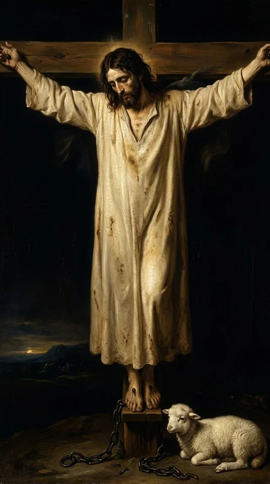
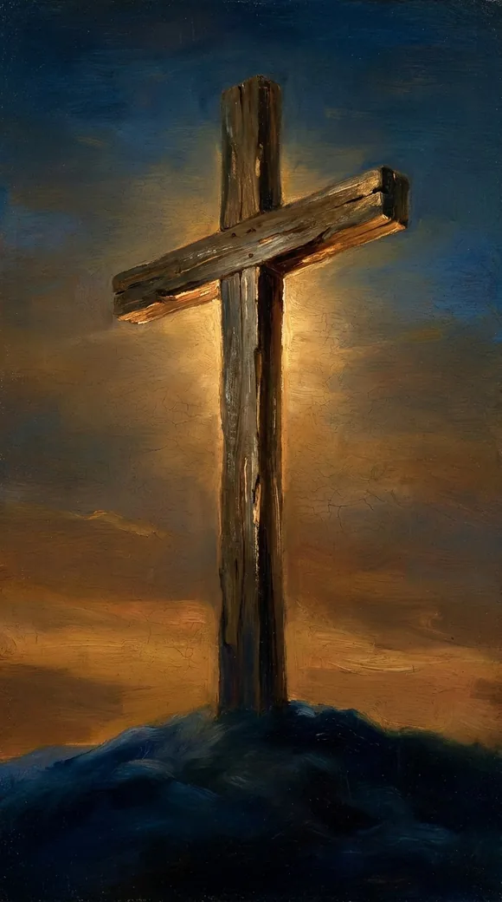
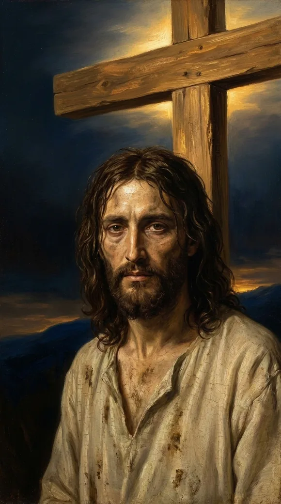
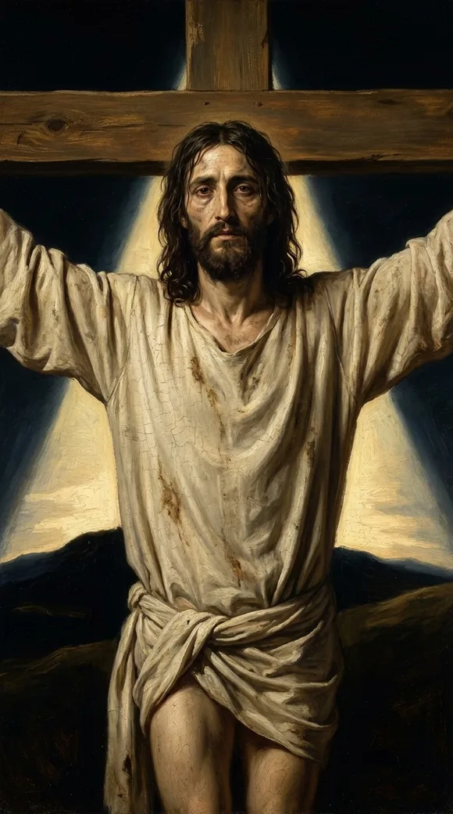

Video will be on YouTube when the series launches.
My God, my God, why hast thou forsaken me? David wrote it. Jesus cried it from the cross.
The study behind this
Psalm 22 is a cry of King David, set down roughly a thousand years before Christ. It opens in the voice of a man surrounded and abandoned, then bends, line by line, toward a suffering David himself never endured and a rescue that reaches the ends of the earth.
My God, my God, why hast thou forsaken me?
Psalm 22:1
My God, my God, why hast thou forsaken me?
Matthew 27:46
The reading
The loneliest sentence Jesus ever spoke wasn't His own line, He was quoting.

Psalm twenty-two opens in the voice of a forsaken man. David wrote it; Jesus made it His own.
David's very first line:
My God, my God, why hast thou forsaken me?
Psalm 22:1

A thousand years later, at the ninth hour, Jesus cried it from the cross:
My God, my God, why hast thou forsaken me?
Matthew 27:46
The very same words.

This was no cry of lost faith, even forsaken, He still calls God "my God." It was the sinless Son taking our place, and bearing the forsaking that our sin deserved.

He was forsaken so that you never will be. However far you've run, the way home is open, and He opened it from the dark.
Every quotation is the King James Version, verified word for word against the text.